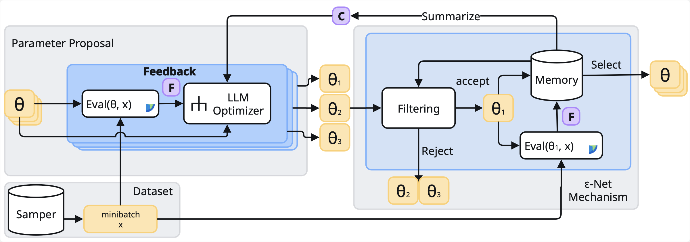
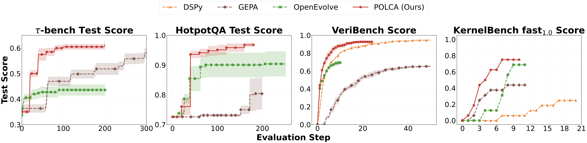
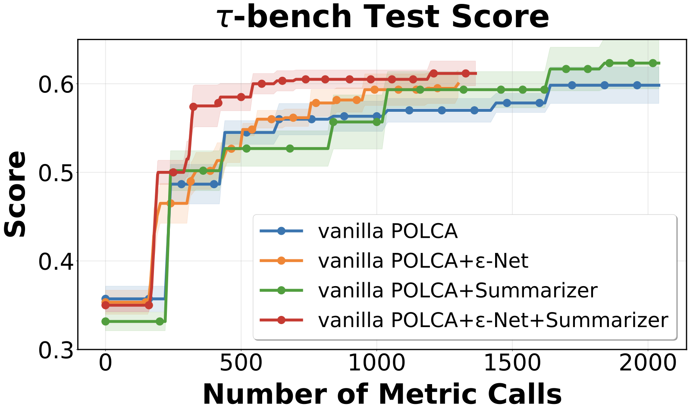
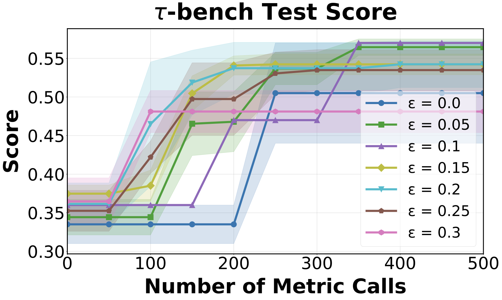
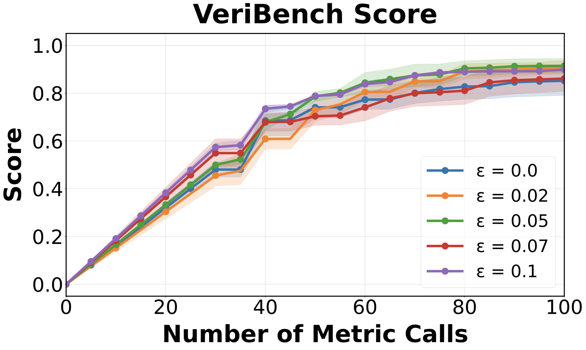
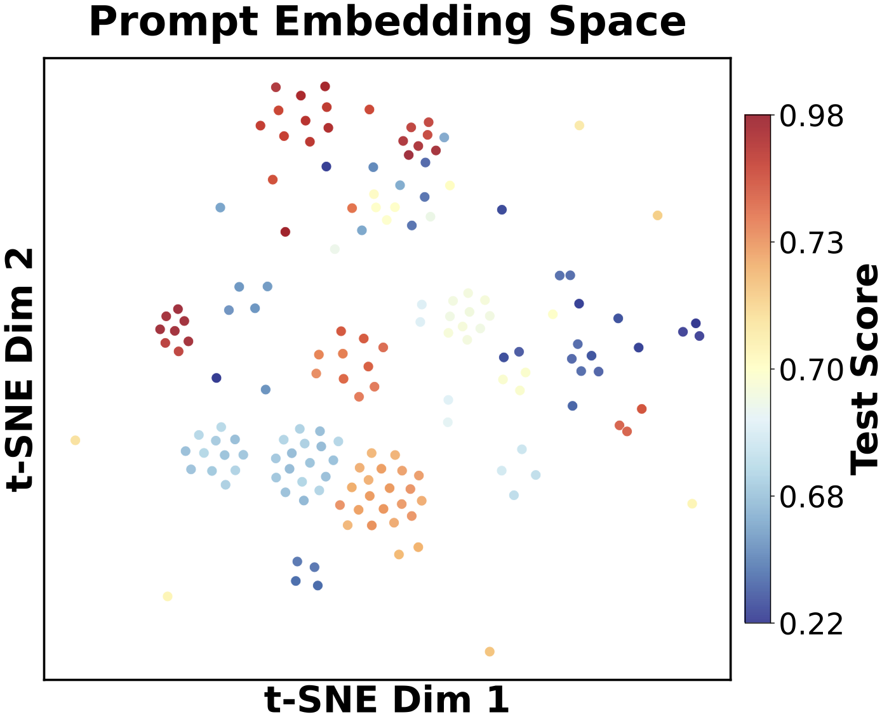
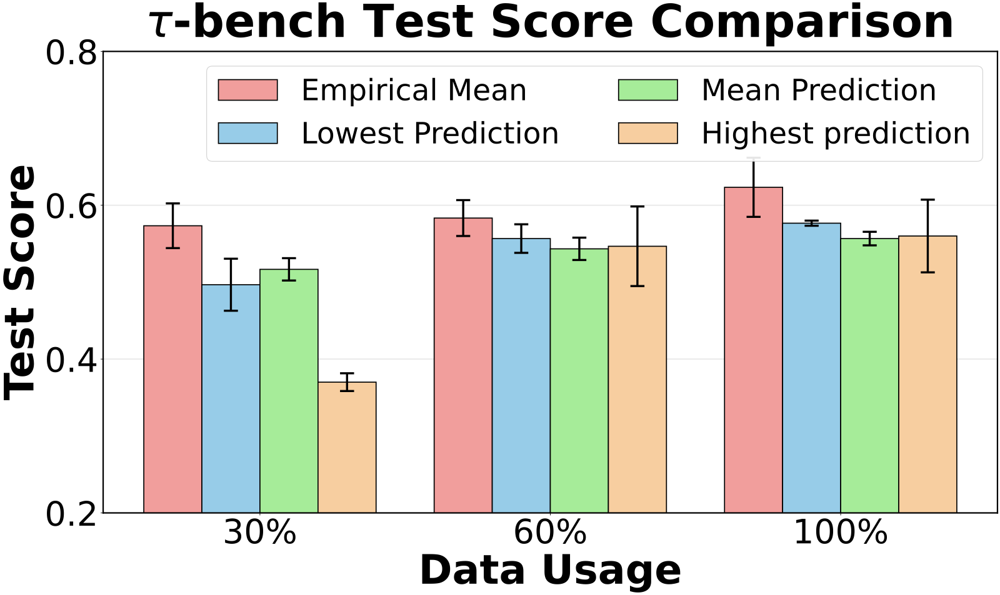

Prioritized Optimization with Local Contextual Aggregation — a provably scalable search algorithm for LLM-based generative optimization under stochasticity.
1University of Wisconsin–Madison · 2Google DeepMind · 3Google Research (* Corresponding authors)
POLCA is a search algorithm for generative optimization with LLMs. Given a fixed LLM as a black-box proposal oracle, it improves a parameterized program — an agent prompt, a piece of Lean 4 code, a CUDA kernel — by deciding how that oracle's proposals are evaluated, stored, and fed back. We are not proposing a better LLM optimizer; the contribution is the search loop around it (a priority queue, an ε-Net filter, and a summarizer), which works with any current or future model and admits a convergence guarantee under evaluation stochasticity. Across τ-bench, HotpotQA, VeriBench, and KernelBench, POLCA outperforms GEPA, OpenEvolve, and DSPy in both speed and final score.

We study stochastic generative optimization of a parameterized program \(P_\theta\): an LLM proposes candidates, a guide returns a numerical score and text feedback, and we want the best program under a fixed evaluation budget. Most recent self-evolving-agent systems share the same loop — propose, validate, keep the best, repeat, with a few parallel threads for exploration. Two problems in that loop are usually left unhandled.
A program's score is rarely a fixed number. It varies with the sampled minibatch, with the program's own execution (an LLM agent run twice gives different traces), and with the evaluator (an LLM judge or human is stochastic and subjective). As a result, a single program needs many evaluations before its average settles to a near-deterministic, reliable estimate of its true reward \(\mu(\theta)\). Committing to the best candidate after one stochastic evaluation just fits the randomness. POLCA instead keeps a priority queue that never freezes a score: high-priority programs are re-selected and re-evaluated, so their empirical mean concentrates toward \(\mu(\theta)\) over time. The priority function is a free choice — the mean, UCB, or others recover different search strategies within the same algorithm.
Prompted with similar context, an LLM optimizer tends to emit many semantically near-identical candidates. So as optimization proceeds, the number of candidates grows roughly linearly with the number of iterations, while the amount of genuinely useful, distinct information does not. This is what makes the two problems compound: each program already needs many evaluations to be scored reliably, and if we had to score every generated program this way, a candidate pool that keeps growing linearly quickly becomes intractable — and simply adding parallel threads does not help, since the threads chase the same few ideas.
POLCA breaks the compounding by admitting a new candidate only when it is sufficiently dissimilar (distance \(> \varepsilon\)) from everything already in memory, keeping the queue an ε-Net: a bounded, diverse cover of the program space. Crucially this test is made on a reward-free similarity signal, not on stochastic scores, so de-duplication is unaffected by evaluation stochasticity. The evaluation budget then goes to scoring a bounded set of genuinely distinct programs rather than re-confirming near-duplicates — exactly the quantity \(N_\varepsilon\) that appears in Theorem 1.
POLCA is best read as a framework, not a fixed pipeline. It coordinates four roles — a memory, a similarity filter, a proposer, and a summarizer — and prescribes how they interact, while leaving each role's internal implementation open. The analysis in the next section then asks a precise question: given any fixed choice of these components, why is the resulting search procedure efficient?
Each iteration samples a minibatch \(\mathcal{B}\) from the dataset, selects the highest-priority programs from the queue, and evaluates them on \(\mathcal{B}\) to refresh their statistics. The optimizer then proposes new candidates from this fresh feedback plus a global summary; surviving the similarity filter, they are evaluated on the same \(\mathcal{B}\) (for a fair comparison) and merged into memory. A summarize step finally compresses memory into the context used next round. The remaining subsections explain each role and what is — and is not — fixed about it.
The queue is the device that handles stochasticity. Every candidate carries the full history of its evaluations, and is ranked by a priority computed from that history — by default the empirical mean score, which converges to the true reward \(\mu(\theta)\) as a program is re-selected and re-evaluated. This is what lets POLCA spend more samples on promising programs while still being able to revisit a candidate that looked weak under an unlucky early evaluation, rather than discarding it. The priority is itself a knob: replacing the mean with a UCB score yields provably optimistic exploration (used in the theory), and other priorities recover other classical search strategies within the same machinery.
The ε-Net is the device that handles duplication. It is a generic semantic filter: a new candidate is admitted only if it is farther than \(\varepsilon\) from every program already in memory, under some similarity measure \(\tilde d(\cdot,\cdot)\) on programs. This keeps memory a bounded, diverse cover of the space — its size \(N_\varepsilon\) depends on \(\varepsilon\) and the program space, not on the iteration count — so the evaluation budget is spent on distinct programs instead of near-duplicates. The threshold \(\varepsilon\) is a coverage–cost dial set by the user: larger \(\varepsilon\) means coarser discretization, fewer programs, faster early progress, and a small approximation error.
The proposer is the external LLM optimizer that, given a program together with its feedback, returns a new candidate; the summarizer is an LLM that compresses the whole memory into a compact global context \(c_{\text{history}}\) supplied to the proposer. Conceptually, proposing from the current minibatch alone is a first-order update, while adding \(c_{\text{history}}\) — patterns of success and failure aggregated across many programs — acts like momentum that stabilizes the search and helps escape local optima. Both are treated as black boxes: how the proposer reasons internally, and how the summarizer chooses what to keep, are implementation choices POLCA does not constrain.
Most self-evolving-agent systems are validated only empirically. Treating the LLM optimizer as a fixed black-box oracle, we instead prove POLCA converges efficiently under evaluation stochasticity. Because the analysis concerns the search procedure rather than the model, the guarantee holds for any optimizer plugged in.
We do not model the LLM's internals; we summarize its quality by two constants, \(\gamma\) (how much it can improve) and \(\delta_0\) (how reliably). This is the weakest useful "the optimizer makes some progress" condition — without it the oracle could be adversarial and no search procedure could succeed.
There exist constants \(\gamma > 0\) and \(\delta_0 \in (0,1)\) such that for any program \(\theta\) with \(\mu(\theta) \le B-\gamma\), the optimizer proposes a strictly better candidate with at least constant probability:
Stronger optimizers \(\Rightarrow\) larger \(\gamma\) and \(\delta_0\) \(\Rightarrow\) tighter bounds below. Rewards live in \([0,B]\); each observation is \(\sigma^2\)-sub-Gaussian around its true mean \(\mu(\theta)\).
Run POLCA with a UCB priority for \(n\) iterations, where \(T_\theta(n)\) is the number of times program \(\theta\) is selected and evaluated. We bound the total budget spent on sub-optimal programs (those with \(\mu(\theta)\le B-\gamma\), which the optimizer can still improve); bounding it means POLCA stops paying for them and converges to the near-optimal region \((B-\gamma,\,B]\).
The bound is a sum of two independent costs — one set by the optimizer, one by the task's stochasticity — so it shows which bottleneck dominates a given problem.
The cost of generating a near-optimal program. It depends only on the oracle's quality \((\gamma,\delta_0)\) — a stronger LLM (larger \(\gamma\), larger \(\delta_0\)) shrinks it — and not on the stochasticity \(\sigma\) or the program-space size. You pay it even with deterministic evaluation.
The cost of distinguishing good from bad under stochasticity. It scales with the reward variance \(\sigma^2\) and with \(N_\varepsilon\), the number of distinct programs the ε-Net admits. Without the ε-Net, \(N_\varepsilon\) would grow with \(n\) and this term would diverge; the ε-Net keeps it bounded.
Most existing generative-optimization methods perform sequential updating: at each step the optimizer is shown its most recent proposal and asked to improve it, so the search is a single chain \(\theta_0 \!\to\! \theta_1 \!\to\! \cdots\). The flaw is that the chain has no memory — when the optimizer returns a worse candidate (which happens with probability \(1-\delta_0\)), the next step builds on that worse program, and progress can slide backward. POLCA instead always re-proposes from the best program found so far, which the priority queue tracks for free. With deterministic rewards, the expected number of steps to first reach a near-optimal program (reward in \((B-\gamma,\,B]\)) is:
We default to the empirical-mean priority; replacing it with a UCB score adds optimistic exploration and yields the provable guarantee of Theorem 1, but gives only marginal empirical gains (see the ablation and the paper). Full statements and proofs are in the paper.
Four benchmarks, each isolating a different source of stochasticity, run in the Trace pipeline with OptoPrime as the optimizer. Baselines are GEPA, OpenEvolve (an open-source AlphaEvolve), and DSPy.

| τ-bench Pass@1 (trained on 10 tasks) | First 10 | Last 105 | All 115 |
|---|---|---|---|
| Base Prompt | 0.348 | 0.392 | 0.389 |
| GEPA | 0.557 | 0.417 | 0.429 |
| OpenEvolve | 0.373 | 0.422 | 0.418 |
| POLCA (Ours) | 0.575 | 0.425 | 0.439 |
Trained on only the first 10 tasks; POLCA wins on the training split and generalizes best to all 115 (+13% over base).
| VeriBench Lean 4 compilation (50 calls/task) | Pass Rate |
|---|---|
| DSPy | 0.888 ± .023 |
| GEPA | 0.695 ± .010 |
| OpenEvolve | 0.738 ± .010 |
| POLCA (Ours) | 0.952 ± .005 |
POLCA reaches 95.2% (133/140), far above the original VeriBench sequential baseline of 0.593 (67/113).
Removing either component hurts. The ε-Net conserves sampling budget by pruning semantically redundant candidates, so the same score is reached with fewer samples; the Summarizer feeds the optimizer global success/failure patterns drawn from the whole memory rather than a single program. Together they account for the gap between "vanilla" POLCA and the full method.

Performance is robust across a reasonable range of ε. Setting ε = 0 (no discretization, memory grows unchecked) is consistently worst; very large ε speeds up early learning but caps asymptotic performance through coarser approximation. A moderate ε buys speed at negligible cost.


A natural alternative to re-evaluating programs is to predict their reward: train a regressor on (embedding, reward) pairs and use it to rank every candidate, exploiting the fact that similar programs have similar scores. We tested this carefully. First, the premise holds locally — a t-SNE projection of prompt embeddings collected during a HotpotQA run (Figure 5, left) shows that tightly clustered programs share similar scores, which is exactly the local smoothness the ε-Net relies on to discard near-duplicates. We then asked whether that smoothness can be pushed into a global predictor: we trained an ensemble of five \(\ell_2\)-regularized logistic regressors mapping a program's embedding to its expected reward, each on a random subset of the collected data, and selected the best program in memory by four criteria — the empirical mean and the ensemble's max, mean, and min predictions — across a range of training-set sizes, externally re-testing the chosen program for a precise score. The result is consistent (Figure 5, right): selecting purely by the empirical mean beats every regressor-based criterion. The reason is that local embedding smoothness does not extend to globally accurate score prediction — without explicit problem-instance information, a program's embedding simply does not determine its reward across the whole space, so the learned surrogate overfits the stochastic training scores. This is precisely why POLCA uses the embedding only as a reward-free similarity signal inside the ε-Net (where local smoothness is enough) and keeps a non-parametric empirical mean as the priority (where global accuracy would be needed) — rather than collapsing both jobs into one fragile regression model.


@inproceedings{ren2026polca,
title = {POLCA: Stochastic Generative Optimization with LLM},
author = {Ren, Xuanfei and Nie, Allen and Xie, Tengyang and Cheng, Ching-An},
booktitle = {International Conference on Machine Learning (ICML)},
year = {2026},
eprint = {2603.14769},
archivePrefix = {arXiv},
primaryClass = {cs.LG}
}